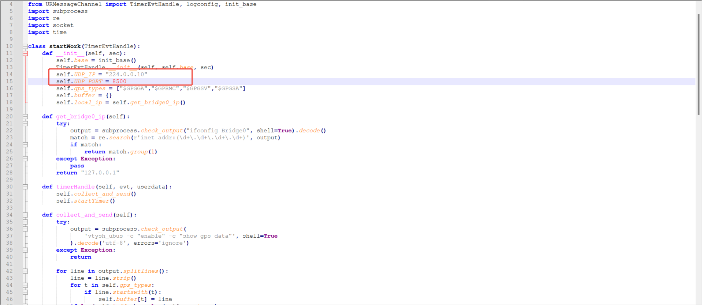
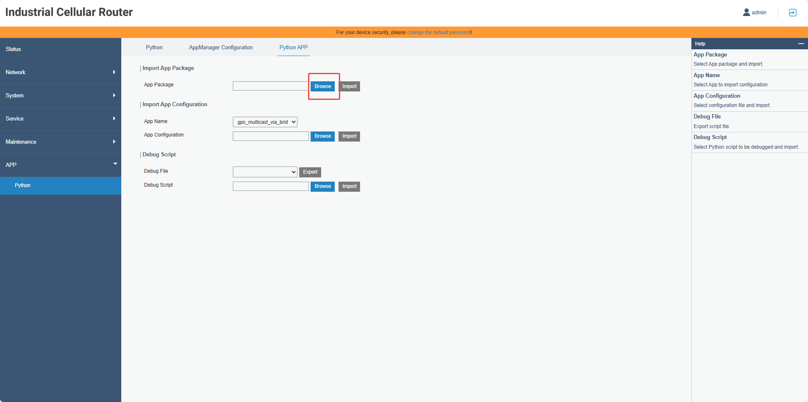
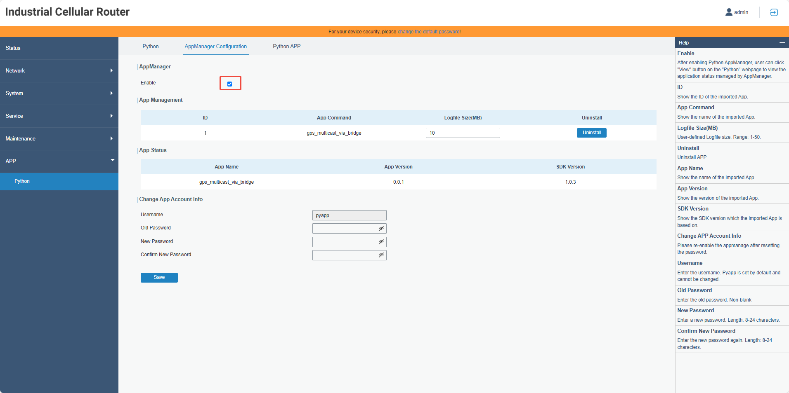
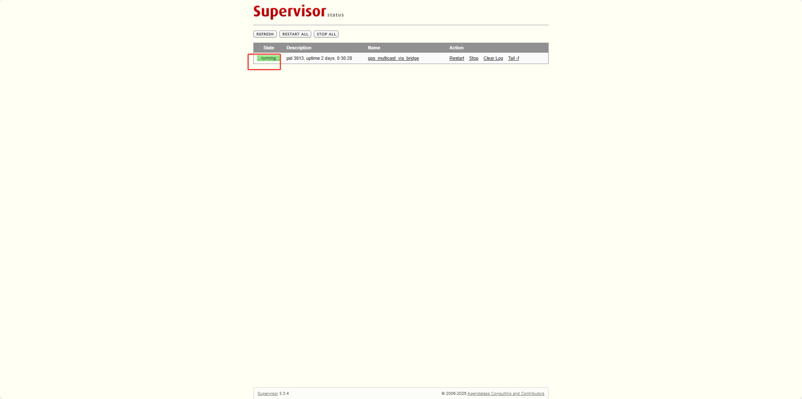
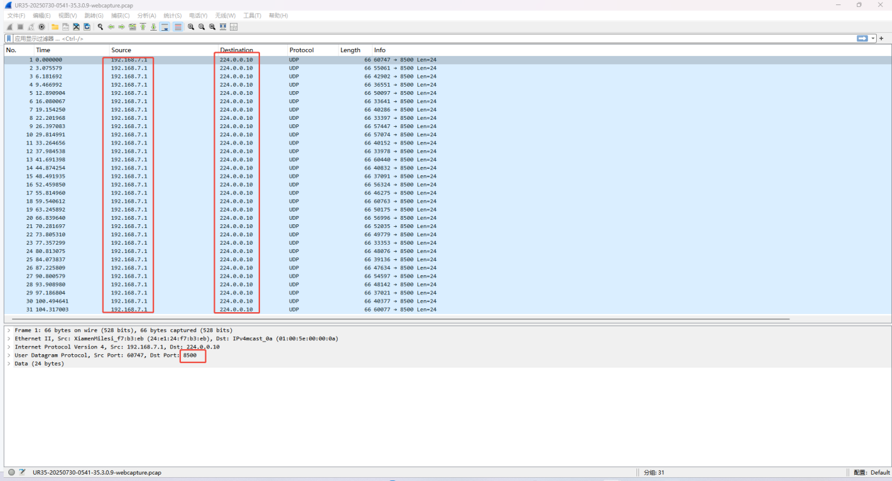

How to use Python to multicast GPS data from a Milesight router through the LAN port

| Version | Update Time | Description | Author |
| 1.0 | Aug 26th, 2025 | Initial version | Charles |
Description
Currently, the Milesight router only supports forwarding GPS data to the destination IP via IP unicast. If you want to multicast GPS data using UDP, you can achieve this through the Python feature available on the Milesight router. This article will guide you on how to use Python on the Milesight router’s LAN port to multicast GPS data via UDP.
Requirement
Milesight UR3x, UR75 v2
mSD card/SSD module
Milesight Router Python SDK
Configuration
Step 1: Please refer to this document to install python SDK: https://support.milesight-iot.com/support/solutions/articles/73000514211-how-to-install-python-sdk-and-read-log
Step 2: Download the attached Python APP and unzip it. Find the main.py file and modify the following parameters.You can change the UDP_IP and UDP_PORT to the destination IP and port where you want the Milesight router to send the GPS data.

Step 3: Import the modified Python APP and enable AppManager.


Step 4: View and enter Supervisor page, and then check the running status of Python APP.

Step 5: According to the configuration in step two above, I ran this Python app on the UR35 and performed packet capture on the UR35. It was found that the UR35 sent UDP packets containing GPS data to the correct IP address and port through the LAN port.

Python App: